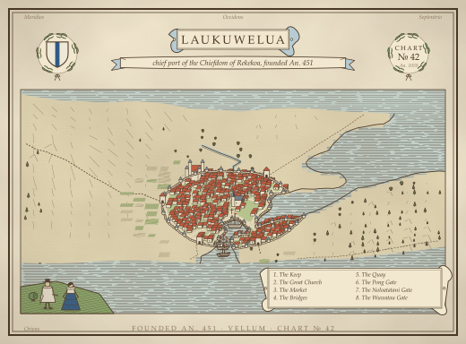
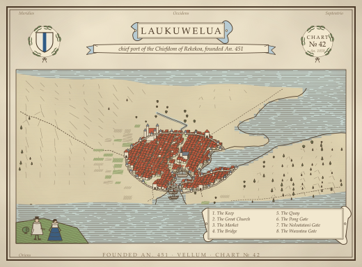
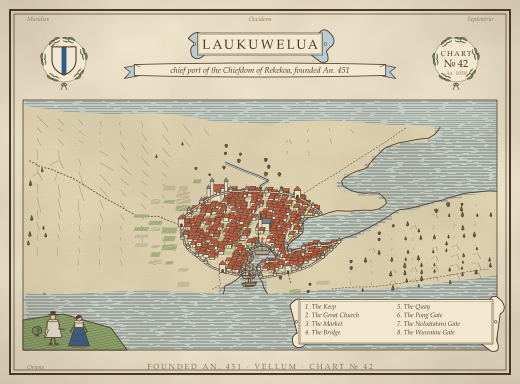
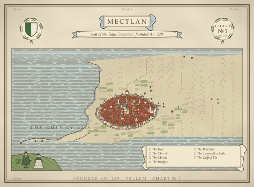
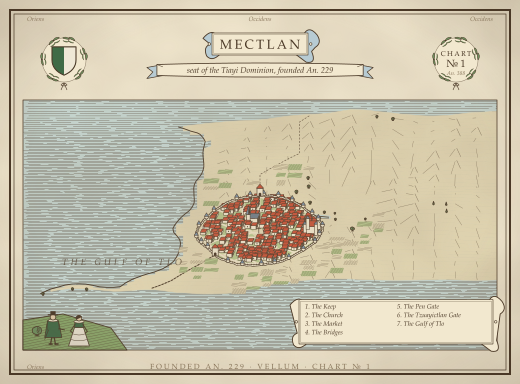
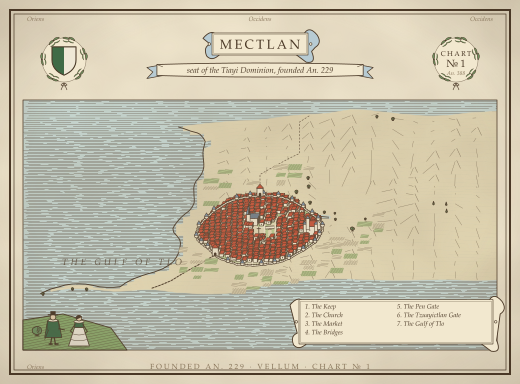
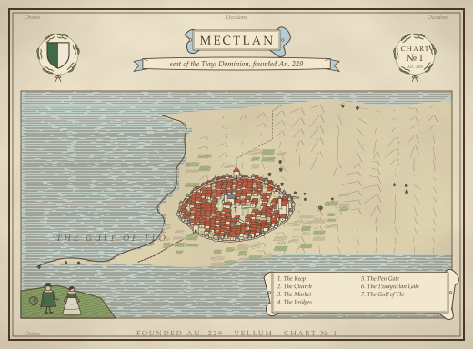
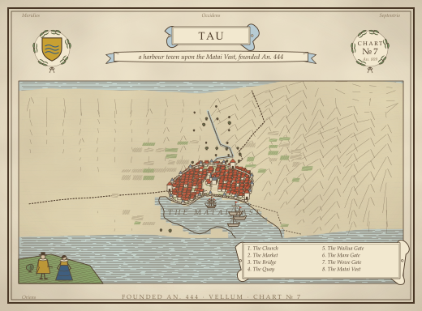
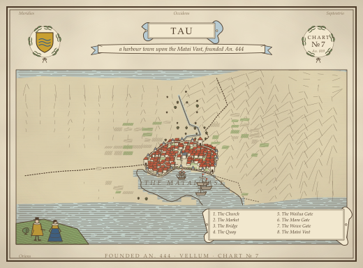

Issue #793, how much each kind is built up
The full tier puts a capital's bird's-eye at about 2.6 times today's plate; the lean tier puts it near the ruled mock C's own size.
Laukuwelua, the capital (seed 42, index 0), A. Streets that follow the land
 Full: a house every frontage, the yards built up in the greater kinds
Full: a house every frontage, the yards built up in the greater kinds
Lean: wider houses, more gaps, the yards left openLaukuwelua, the capital (seed 42, index 0), B. Streets laid on a grid

Full: a house every frontage, the yards built up in the greater kinds
Lean: wider houses, more gaps, the yards left openMectlan, a realm's seat (seed 1, index 1), A. Streets that follow the land

Full: a house every frontage, the yards built up in the greater kinds
Lean: wider houses, more gaps, the yards left openMectlan, a realm's seat (seed 1, index 1), B. Streets laid on a grid

Full: a house every frontage, the yards built up in the greater kinds
Lean: wider houses, more gaps, the yards left openTau, a town (seed 7, index 4), A. Streets that follow the land
Full: a house every frontage, the yards built up in the greater kindsLean: wider houses, more gaps, the yards left open
Tau, a town (seed 7, index 4), B. Streets laid on a grid

Full: a house every frontage, the yards built up in the greater kinds
Lean: wider houses, more gaps, the yards left open